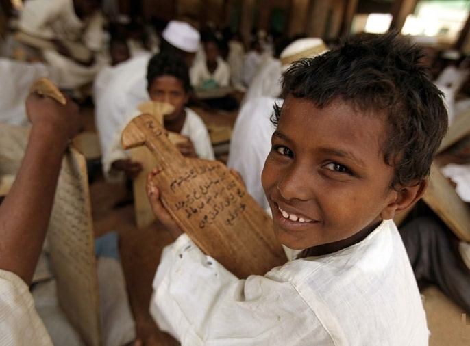

Our Projects
Building Sudan's Digital Future Through Innovation
Active Projects
Sudaverse is developing cutting-edge AI solutions that preserve Sudanese culture while advancing technological capabilities across multiple sectors. Our projects combine cultural preservation with practical innovation.
Sudanese Language Models

Our flagship project focuses on developing open-source Large Language Models (LLMs) specifically trained on Sudanese dialects, cultural context, and historical knowledge. These models ensure that Sudan's linguistic diversity is represented in the AI landscape.
Key Features:
- Support for multiple Sudanese Arabic dialects
- Integration of local languages and cultural knowledge
- Open-source architecture for community collaboration
- Bias mitigation and ethical AI practices
Cultural Heritage Digitization
Preserving Sudan's rich cultural heritage through advanced digitization techniques. This project archives historical documents, traditional art, music, and oral histories using AI-powered tools for cataloging and preservation.
Initiatives:
- Digital archive of Sudanese literature and manuscripts
- Traditional music and folklore preservation
- Visual arts documentation and analysis
- Oral history recording and transcription
Data Curation Platform
An advanced platform for curating, managing, and distributing high-quality Sudanese datasets. This infrastructure enables researchers, developers, and institutions to access reliable data for AI development.
Capabilities:
- Unified dataset repository
- Quality control and validation tools
- API access for developers
- Privacy-preserving data sharing mechanisms
AI for Agriculture
Leveraging AI to enhance agricultural productivity and sustainability in Sudan. This project develops tools for crop monitoring, yield prediction, and resource optimization tailored to Sudanese farming conditions.
Solutions:
- Satellite-based crop health monitoring
- Weather prediction and irrigation optimization
- Pest detection and management systems
- Market price forecasting

Healthcare AI Solutions

Developing AI tools to improve healthcare access and quality across Sudan. Our solutions focus on diagnosis support, medical information access, and healthcare resource optimization.
Applications:
- Medical image analysis for diagnosis
- Multilingual health information chatbot
- Disease outbreak prediction and monitoring
- Telemedicine support systems
Educational Technology
Creating AI-powered educational tools that make learning more accessible and effective for Sudanese students. Our platform adapts to individual learning styles and incorporates local cultural context.
Features:
- Personalized learning pathways
- Culturally relevant educational content
- Interactive AI tutors (see SudaTutor)
- Assessment and progress tracking

Get Involved
Interested in contributing to our projects? We welcome collaborators, researchers, developers, and cultural experts to join our mission. Whether you have technical expertise or cultural knowledge to share, there's a place for you in Sudaverse.